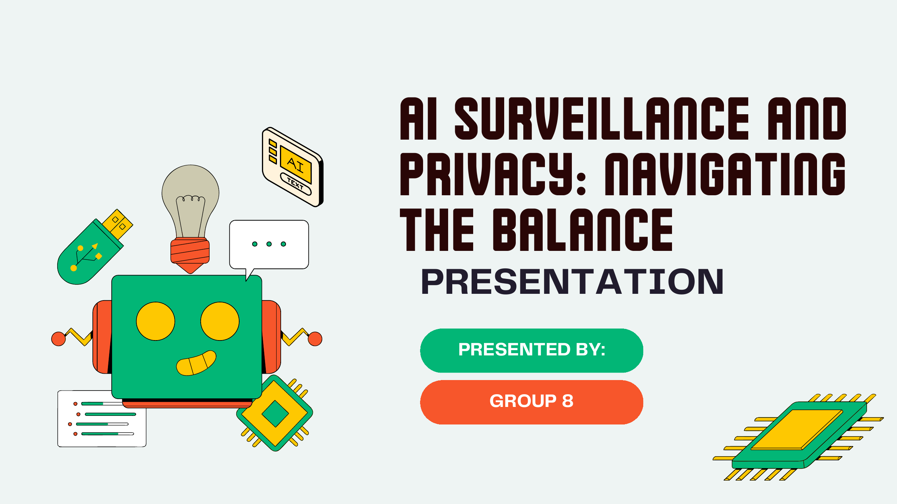

Jexora AI Jewelry Inspector
AI 产品概念、市场调研和商业模式讨论。
Selected Work
这里整理了我在本科、研究生和实习期间参与的六个项目。大部分是课程小组项目，我会尽量说明项目背景、我参与的部分，以及还可以继续改进的地方。
AI 产品概念、市场调研和商业模式讨论。
高保真原型、任务流程和可用性修改。
用户研究、服务设计和 App 产品概念。
消费者、竞品和营销方向分析。
目标受众定位、品牌语言和广告创意表达。
AI 伦理、互联网治理和技术社会影响研究。

AI 产品概念 · 市场调研
研究 AI 能否帮助珠宝商更方便地完成初步鉴定，并讨论产品如何进入市场。
这是研究生阶段的小组项目，不是已经落地的真实产品。我参与了行业资料和竞品整理、目标客户问题分析、产品功能讨论，以及硬件销售加软件订阅的收入方式设计。项目让我练习了如何把一个技术想法整理成完整的产品介绍。它目前最大的不足是缺少真实珠宝商访谈和准确率测试，如果继续做，我会先补上这两部分。
查看原始 PDF
产品设计 · UX · 高保真原型
围绕二手交易平台的发布、搜索、筛选和沟通任务进行高保真原型优化。
这是本科课程的小组项目，重点是根据前一轮测试反馈修改高保真原型。我参与了页面信息整理和交互调整，主要处理发布步骤不清楚、筛选状态不明显和页面切换不顺畅的问题。这个项目让我意识到，原型不仅要展示理想流程，也要考虑输入错误、返回上一步和筛选结果为空等状态。
查看原始 PDF
用户研究 · 服务设计 · App 概念
一个面向年轻养宠人群的遛狗服务 App 概念，聚焦时间不足、信任和服务透明度问题。
这个课程项目从问卷、访谈和竞品研究开始，再把用户对时间、价格和宠物安全的担心整理成功能需求。我参与了调研、用户画像、原型和展示材料制作。我们设计了实时定位、视频更新和服务保障等功能。现在回看，项目对宠物主人的需求考虑较多，但对遛狗员审核、排班和收入机制讨论不够。
查看原始 PDF
市场研究 · 竞品分析
为鞋类制造与分销企业制定市场分析、营销策略和广告方向。
这个项目结合了我在 A.M. Footwear 实习时接触到的业务信息和课程要求。我整理了目标消费者、竞品和销售渠道资料，并提出品牌表达和推广方向。它更接近一份分析与建议，而不是已经执行并验证的营销方案；如果继续完善，需要加入真实预算、投放数据和转化结果。
查看原始 PDF广告策划 · 品牌传播 · 目标用户
围绕 20-30 岁消费者，设计强调舒适、质量、时尚与定制化的广告传播方案。
这是与营销计划配套的广告方案。我参与了目标受众、品牌卖点和传播场景的整理，并尝试把舒适、质量和定制服务转化成更容易理解的广告信息。这个项目让我学到，同一个卖点在短视频、电商页面和线下陈列中需要不同的表达方式。
查看原始 PDF
AI 伦理 · 研究分析 · 互联网治理
研究 AI 监控技术在城市安全中的应用价值，以及数据隐私、公众信任和监管风险之间的平衡。
这是研究生阶段的小组研究项目。我参与资料整理、议题分析和展示结构设计，从公共安全、隐私、成本和公众信任几个角度讨论 AI 监控。它让我更清楚地认识到，AI 产品不能只讨论准确率和效率，还需要说明数据从哪里来、谁可以使用，以及用户如何提出异议。
查看原始 PDF